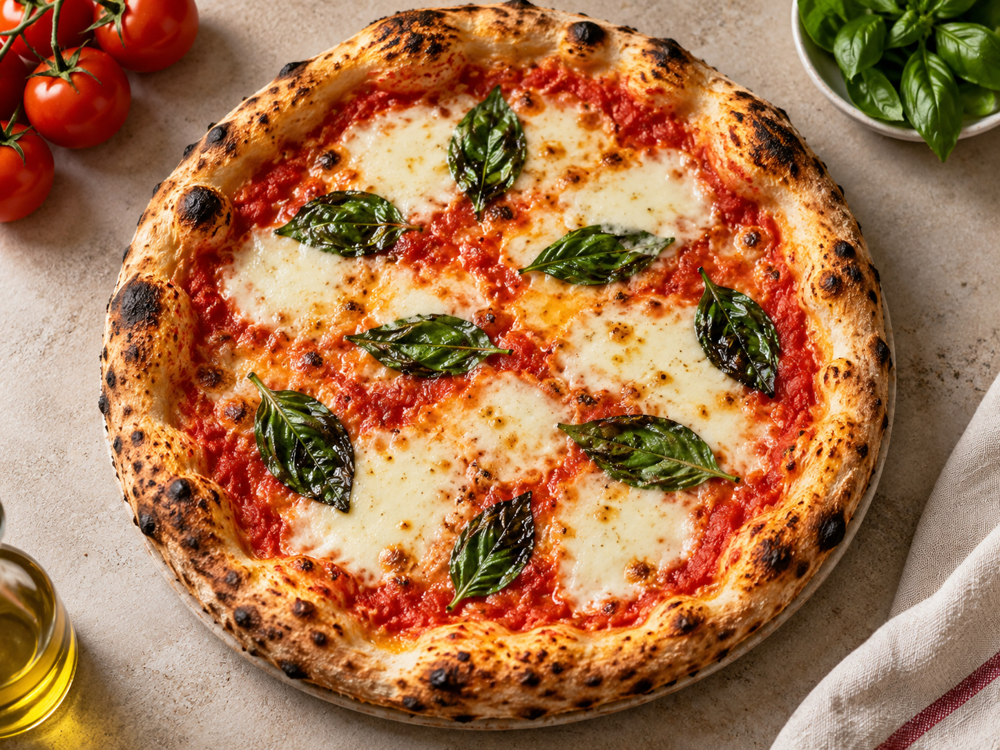

Ingredients
- 1 pizza base
- 1/2 cup tomato sauce
- 1 cup fresh mozzarella
- Fresh basil leaves
- 1 tbsp olive oil
- Salt and pepper

A classic pizza with tomato, mozzarella, basil, and a crisp homemade-style crust.
Story Pack
This recipe keeps the ingredient list short so each flavor stands out clearly.
Graduate UI Simulation
This panel is a planned visual assistant concept for the course project.
Yes. Chop and measure ingredients before you begin cooking.
Cool them first, then refrigerate in a covered container.
Yes. Adjust salt, pepper, herbs, and spice to your taste.